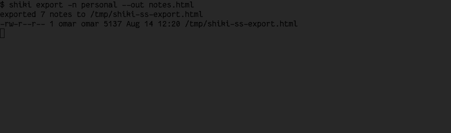

Everything shiki actually does, written so it makes sense whether this is your first time
near a terminal or your ten-thousandth. Every keybinding, every CLI command, and every
config.toml option — what it's for, how to use it, and a real screenshot next
to the parts that are easier to show than to describe.
⌕/
Start here — no terminal experience required
If the word "terminal" makes you nervous, this section is for you. shiki is a program you
run from a terminal instead of double-clicking an icon, but once it's open, it behaves
like any other app: you see panels, you move a selection with your keyboard, you press
keys to do things. There's no command syntax to memorize to just use it.
1. Opening it
After installing (see the Install section on the home
page), open your terminal application and type:
shiki
and press Enter. That's the entire launch sequence — no arguments, no setup wizard. shiki
creates its config and data folders the first time it runs and drops you straight into the
interface below.
2. The three panels
NOTEBOOKS (left) → NOTES (middle) → PREVIEW (right). This is the whole app.
Everything in shiki lives in exactly one of three columns, read left to right like a
sentence: pick a notebook (a folder of related notes — "personal",
"work", whatever you want), pick a note inside it, read/edit it in the
preview. The highlighted column is the one your keypresses currently
control.
3. Moving around
Four keys get you almost everywhere. Everything else in this page is detail on top of
these:
Key
What it does
↓ / ↑
Move the selection down/up in whichever column is highlighted (also works with j/k if you're coming from Vim, but the arrow keys always work too — nothing here requires learning Vim)
→ / Enter
Go into the highlighted thing — open a notebook, open a note
←
Back out one step
?
Show every keyboard shortcut, searchable — your safety net. If you ever forget a key mid-task, press this
That's genuinely enough to browse and read notes. The rest of this page is what to do once
you also want to create, edit, search, and sync them.
4. Your first note
With a notebook open (NOTES panel highlighted), press a.
Type a title, press Enter.
Pick "blank" from the template list (or any other template — see
Note format), press Enter.
You're now typing directly into the note. When you're done, press Esc
twice — once to leave typing mode, once to save and close.
There's no separate "save" button or command — leaving edit mode saves. Nothing is lost by
closing the terminal window either; the note is already a real file on disk the moment you
exit editing.
5. Quitting
Press q from the main screen. If a popup or menu is open, Esc
closes that first — q only quits the whole app once you're back at the plain
three-panel view.
You will not break anything by exploring. Deleted notes go to a trash
folder and can be restored (leader then u — see
Keybindings), every change is backed by git so nothing is ever
silently overwritten without a history to recover from, and ? is always one
keypress away if you get lost.
Layout (3 panels, Yazi-inspired)
The layout isn't fixed-size — it reshapes itself to whatever terminal window you actually
have open, the same way a responsive website reflows on a phone versus a desktop monitor.
Wide (≥70 columns) — all three panels, the focused one gets the most space.Narrow but tall, or square (46–70 columns) — same panels, stacked top-to-bottom.Very small (<46 columns or <14 rows) — one panel at a time, full screen.
Panels behind the current focus collapse to a thin strip (Miller-columns style, like
Yazi): browsing NOTEBOOKS shows all three panels at their normal width; moving into NOTES
collapses NOTEBOOKS down; moving into PREVIEW collapses both NOTEBOOKS and NOTES so the
note has (almost) the full width to read comfortably. Navigation (h/l/tab)
works identically no matter which of the three tiers above you're currently in — resizing
your terminal window mid-session just reflows the same panels live, nothing resets.
Modes (vi-like)
shiki has four modes — think of a mode as "what your keyboard currently means." The
footer at the bottom of the screen always tells you which one you're in (it stays blank
for NORMAL, since that's where you spend most of your time and doesn't need announcing).
Mode
Description
NORMAL
The default. Every key is a shortcut (navigation, opening things, deleting, etc.) — nothing you press here types text
INSERT
Typing into a one-line prompt: naming a new note, a search query, a git remote URL. Esc cancels, Enter confirms
EDIT
Writing the actual body of a note (the inline editor). Every key types text, same as any plain text editor — Esc twice saves and exits
VISUAL
Selecting multiple notes/folders at once, to delete, move, or copy them together
If you've used Vim before, this will feel familiar (NORMAL/INSERT/VISUAL map directly).
If you haven't, the practical rule is simpler: NORMAL is for moving around and pressing
shortcuts, EDIT and INSERT are for typing, and Esc always gets you back out.
Keybindings
Keybindings aren't one flat list — they're scoped to what's focused, so the same
physical key can mean something different (but locally sensible) in each panel: a
creates a notebook while NOTEBOOKS is focused, but a note while NOTES is focused. Navigation
is hardcoded (it behaves the same everywhere, so there's nothing to configure); everything
else lives in its own editable config.toml table — see
config.toml below if you ever want to rebind something to a key that
feels more natural to you.
You do not need to memorize any of the tables below. Press ? at any time for
a live, searchable version of everything that's actually bound right now — it's generated
straight from your own config, so it can never show you a binding that doesn't really work.
? — every binding, searchable. Type to filter, Enter runs it directly.
Navigation (hardcoded, works everywhere)
Key
Action
j / k / ↓ / ↑
Navigate lists (down / up); scrolls the note while PREVIEW is focused
PageDown / PageUp
Jump 10 at a time — same lists/scroll as j/k, just a bigger step
Home / End
Jump to the first/last notebook or note, or the top/bottom of the note in PREVIEW
l / → / enter
Go one level deeper (Yazi-style): NOTEBOOKS → NOTES → PREVIEW
h / ←
Go back one level (Yazi-style)
tab
Cycle focus between panels
?
Which-key — near-full-screen list of every binding, doubling as a unified command palette: type to filter (by key, action, or scope) — once the query is non-empty, it also fuzzy-matches notes across every notebook and lists them under a "notes" section, ↑/↓/PageUp/PageDown/Home/End move the selection, enter runs the highlighted action or jumps straight to the highlighted note, Esc just closes
q
Quit
Esc
Back to NORMAL / close popup / cancel leader
PageUp/PageDown/Home/End
also work inside every scrollable modal (which-key, logs, global search, tree view) using the
same list/selection they already navigate with j/k.
Pick a theme — modal, live preview while browsing, Enter confirms
g
Search all notes (title + body, every notebook) — modal, Enter/click to jump
T
Tags panel — j/k browse tags, Enter/l drills into the notes carrying one, Enter/l there jumps to it, h/Esc goes back a level
l
Logs — persistent scrollback of every status-bar message (survives restarts, ~/.config/shiki/shiki.log), including errors that already scrolled past; j/k scroll, y/c copies the whole log to the clipboard (OSC 52), x clears all logs (confirmation required), Esc/q closes
b
Notebook drawer — left-side sidebar, every notebook's git status in color (dirty/ahead/behind); j/k or click a row to jump to it, n/click "New" to create a notebook, i/click "Import" to clone from a pasted URL, Esc/b again closes
e
Toggle general.use_favorite_editor on/off and persist it immediately — no need to hand-edit config.toml. The footer always shows which mode is active: the resolved editor name (e.g. nvim) when on, native (the built-in inline editor) when off
U
Check for updates — modal; checks GitHub Releases in the background (never blocks the UI), shows "update available" if there's a newer version, and Enter downloads, verifies (against GitHub's own per-asset checksum), installs, and automatically relaunches into it
u
Undo the last delete — restores the most recently deleted note/folder (or whole batch, from a Visual-mode delete) from the trash (~/.config/shiki/trash/) back to exactly where it came from. A single level of undo, not a full history: only the most recent delete is restorable this way; an older one is still on disk in the trash, just no longer reachable from here. With nothing to undo, reports that instead of doing anything
Scratchpad — open an in-memory editor; Ctrl+S saves its contents through the new-note title/template flow, while Esc discards it
B
Links — the same modal as PREVIEW's L (outgoing wikilinks / backlinks / unlinked mentions for the selected note), reachable from any panel without focusing PREVIEW first
t
Tasks — every - [ ] checkbox task across every notebook in one flat list, pending-only by default, sorted by urgency (overdue → due today → future → undated); every row carries its own muted location (notebook/folders…/note title) so where a task lives is always visible, even mid-scroll. Enter/space toggles the task directly in its source file and updates the row in place; l/o jumps to the note; a also shows completed tasks. An optional @due(YYYY-MM-DD) tag renders the date next to the task: overdue in the theme's error color, due today in warning, future in muted. Relative specs — @due(tomorrow), @due(+3d), @due(+2w), @due(fri) — are pinned to the real date the moment the note is saved. An optional @every(<spec>) tag (day/daily, week/weekly, month/monthly, year/yearly, or Nd/Nw/Nm) marks a task as recurring — completing it inserts its next occurrence right below it, unchecked, with @due advanced by that interval. Also scriptable as shiki tasks (see CLI commands)
P
Publish the selected notebook to a themed PDF via pretty-pdf (external binary, auto-fetched on first use — see CLI commands), written to {data_dir}/exports/{notebook}.pdf, then opened. Theme comes from export.pdf_theme, cyclable in Settings → EXPORT
leader+t — every task, every notebook, sorted by urgency.leader+B — "Mentions (unlinked)", one c away from becoming a real backlink.Real syntax highlighting for fenced code blocks, matched to your theme.
[keybindings.notebooks] — active while NOTEBOOKS is focused
Key
Action
a
New notebook. A git URL (https://, git@host:..., ssh://, git://) derives the notebook name from the repo instead, creates it, sets its remote, and pulls immediately — importing an existing repo is just a + paste URL + Enter. A filesystem path (/abs/path, ~/docs, ./relative) adopts that existing directory as a notebook instead of creating an empty one — name derived from the last path segment; asks to git init first if it isn't already a repo
r
Rename notebook
d
Delete notebook (with confirmation)
s
Git sync — commit (message auto-built from the diff, naming files directly for a small change, e.g. "shiki: added (First note.md)"), + push if the resolved policy's auto_push is on
u
Sync and always push, regardless of auto_push/auto_sync — the explicit "do it now" override
p
Git pull (fetch + fast-forward merge from the configured remote)
P
Git pull for every notebook that has a remote configured
R
Set the notebook's git remote (URL or local path)
Beyond manual s, a notebook can sync itself in the background:
[git] auto_sync = true (off by default) syncs automatically every
auto_sync_every note changes (new/edited/renamed/deleted/moved), not just on
manual s. auto_push, auto_sync, and
auto_sync_every can all be overridden per notebook under
[notebooks.<name>], falling back to the global [git] values
for anything left unset. A failed push never blocks or loses anything — the commit already
happened locally either way, and the next sync attempt just tries the push again.
How to: put your notes on GitHub/GitLab (git sync)
Create an empty repository on GitHub/GitLab (don't add a README — an empty repo).
Select your notebook, press R, paste the repo's URL, Enter.
Press u to commit everything you have and push it right now.
Optional: turn on auto_sync (globally in [git], or just for
this notebook under [notebooks.<name>]) so it keeps syncing itself
every few edits, with no further action from you.
That's the entire setup — no separate git client, no manual git add/commit/push,
ever. Every note file you can already see with a normal file browser is real, and
git log in that folder shows exactly what shiki committed and when.
How to: bring in an existing repo of notes
Press a (new notebook) and paste the repo's git URL instead of typing a
name — shiki detects it, names the notebook after the repo, and pulls its contents
immediately. Or, from the notebook drawer (leader then b),
click/press i for "Import" to do the same thing without leaving the drawer.
How to: link an existing folder of notes (e.g. an Obsidian vault)
Press a (new notebook) and type a path instead of a name — an absolute
path (/home/you/docs), a home-relative one (~/docs), or a
relative one (./docs). shiki adopts that directory as a notebook, naming
it after the last path segment. If the folder isn't a git repo yet, it asks to
git init one first; existing notes already inside it show up immediately.
[keybindings.notes] — active while NOTES is focused
Key
Action
a
New note (empty title stamps today's date). After the title, a template picker opens — every .md file in ~/.config/shiki/templates/ plus a "blank" option; j/k browse, Enter picks one and jumps straight to editing ({{title}}/{{date}}/{{time}}/{{notebook}} already substituted, and a {{cursor}} marker — never saved to disk — leaves the cursor exactly where it was in the template instead of at the top), Esc/q cancels the note entirely. Typing @ anywhere in the title prompt (with or without a title before it) opens a quick dropdown instead — today/yesterday/tomorrow (a computed date, no template) plus every available template, fuzzy-filtered as you keep typing; Enter creates the note and jumps straight to editing, skipping the title→Enter→pick-a-template two-step entirely
f
New folder — empty name cancels rather than creating something unnamed. Created at the current breadcrumb depth, so it can be nested arbitrarily by descending first
r
Rename note
d
Delete the selected note or folder (with confirmation) — a folder deletes everything inside it too. In v select mode, deletes every selected item at once. Moved to the trash rather than permanently removed, so leader+u can undo it
i
Edit inline (or the OS favorite editor if general.use_favorite_editor)
E
Edit externally ($EDITOR)
/
Fuzzy-jump to a note by title anywhere in the current notebook (any folder depth)
t
New/open today's daily note. On first creation each day, a "Due today" section is appended after the template with every pending task due today or overdue, across every notebook — plain bullets linking back to each task's source note. Reopening later never re-injects or duplicates it
m
Move the selected note or folder — prompts for a notebook/path/within/it target, prefilled with the current one; edit the trailing segments to move within the same notebook (missing folders are created), or replace the first segment to move to a different (existing) notebook. In v select mode, moves every selected item at once
o
Cycle sort order (filename / title A-Z / date newest-first)
T
Tree view — every folder and note in the notebook, fully expanded, in one scrollable overview; j/k move, enter/l jumps straight to the selected note, esc/q closes
D
Toggle each note's date next to its title in the list (off by default)
v
Select mode (Mode::Visual) — anchors a multi-select range at the current item; j/k extend/shrink it, v/Esc cancels. d/m (above) act on the whole range instead of one item
y
Select-mode only: copies every selected note/folder to a prompted target (same notebook/path syntax as m), leaving the originals in place
T in NOTES — the whole notebook's structure at a glance.
[keybindings.preview] — active while PREVIEW is focused
Key
Action
i
Edit inline (or the OS favorite editor if general.use_favorite_editor)
E
Edit externally ($EDITOR)
H
Note history — every commit that changed this specific note, newest first, real git history (not a separate versioning system). j/k/PageUp/PageDown/Home/End move, Enter views a revision's full content (frontmatter included, since that's what's actually in the commit), d views a real unified diff of that revision against its parent instead (colored -/+ lines; also works from inside the full-content view to switch straight to the diff), r reverts to the highlighted (or currently-viewed) revision — behind a confirmation, since it overwrites the current content. The revert itself doesn't commit; it shows up as a normal pending change, picked up by s/u/auto_sync like any other edit. The footer shows the count while reading a note ({n} changes)
L
Links — the selected note's outgoing [[wikilinks]] (resolved against every note in the notebook, any folder depth), every other note that links back to it, and notes that mention this note's title in plain text without linking to it ("Outgoing"/"Backlinks"/"Mentions (unlinked)" sections; a section with nothing in it is omitted). j/k/PageUp/PageDown/Home/End move, Enter jumps to the selected note (an unresolved outgoing link reports that instead of jumping), c on a mention row repairs the missed link — it wraps that note's plain-text mention into a real [[wikilink]] (preserving its casing) and the row visibly migrates to Backlinks — and Esc/q closes. Also reachable globally via leader+B
Ctrl+click
Click a rendered [[wikilink]] to jump straight to the note it resolves to — a plain click still enters edit mode everywhere, including on top of a wikilink
H in PREVIEW — real git history for one note, browsable and revertible.
Inside the inline editor (i)
Long lines wrap to the panel's width, the same as PREVIEW — they never scroll off the edge
of the screen. A completely empty note shows a dim placeholder hint ("Type /
for quick blocks…"), gone the instant you type anything.
Typing / as the very first character of a line (nothing to its left — a
/ anywhere else, e.g. mid-sentence or in a URL/fraction, is just a literal
slash) opens a small searchable menu right under the cursor: keep typing to filter by name,
↑/↓ to move, Enter to insert the highlighted block,
Esc to dismiss the menu without leaving edit mode (a second Esc
then saves and exits, as usual).
Type / at the start of a line — every built-in block, filterable, plus anything you've added yourself.
Built-in blocks: h1/h2/h3,
a code fence, a math ($$…$$) block, a table skeleton, a checklist item, a
quote, a divider, today's date, a Tags: line, a YAML frontmatter skeleton, a
bullet/numbered list item, a link, an image, a note/warning callout, and a collapsible
(<details>) section.
How to: add your own /-command
Every command above is just a config entry — nothing about them is hardcoded or special.
Open config.toml and add:
[snippets.callout]
label = "Info callout"
body = "> **Info:** {{cursor}}"
Now typing /callout in the editor offers "Info callout," and inserting it
drops in > **Info:** with your cursor placed right where
{{cursor}} was. {{title}}/{{date}}/{{time}}/{{notebook}}
work the same way note templates already do. Using the exact trigger of a built-in (e.g.
[snippets.h1], case-insensitive) replaces that built-in instead of
adding a duplicate — so if you don't like how /h1 behaves by default,
redefine it instead of avoiding it. See the config
reference for every field a snippet entry supports.
CLI commands
Everything above is the full-screen interface, launched by running shiki with
no arguments. But shiki is also a normal command-line tool — every one of these
runs, prints something (or opens your editor), and returns you straight to your shell.
Useful for scripting, a quick capture without opening the full UI, or wiring into something
else (a cron job for daily notes, a keyboard shortcut that runs shiki daily,
etc.).
shiki # launch TUI
shiki new <title> # create note + open $EDITOR
shiki new "title" --body "text" # create non-interactively, no $EDITOR spawned
shiki new "title" --stdin --tags work,idea # body piped in, tags attached, still no $EDITOR
shiki daily # create/open today's daily note
shiki list # list notes in the default notebook
shiki list -n work # list notes in "work"
shiki list --json # list/search/show all take --json for scripting (list/search: array, show: object)
shiki show <note> # show rendered content (ANSI)
shiki edit <note> # edit with $EDITOR
shiki search <query> # search and show results
shiki tasks # every pending checkbox task across notebooks, urgency-sorted
shiki tasks --overdue --count # just the number — made for waybar/polybar/tmux status modules
shiki tasks --today --json # machine-readable, with due/overdue/location per task
shiki graph # [[wikilink]] connection graph, force-directed, drawn in the terminal
shiki graph -n work --json # nodes/edges/orphans as JSON, for graphviz/d3/gephi
shiki export -n work --out bundle.html # every note in "work" as one self-contained HTML file
shiki export -n work --out bundle.md --format md # or a plain concatenated Markdown bundle
shiki publish -n work # render "work" to a themed PDF via pretty-pdf (auto-fetched, see below)
shiki publish -n work --out report.pdf --theme dark # custom path/theme; theme defaults to export.pdf_theme
shiki sync # git commit+push default notebook
shiki sync -n work # git sync in "work"
shiki config # show config path
shiki notebook create <name>
shiki notebook list --json
shiki notebook rename <old> <new>
shiki notebook delete <name> --yes # permanently deletes the notebook and every note in it
shiki theme list # list built-in themes, marking the active one
shiki theme set <name> # switch theme (persisted to config.toml)
shiki theme create [--from <name>] # scaffold all 19 color overrides from a real palette
shiki doctor # environment check: config, data dir, git, editor, terminal, keybindings, snippets
shiki graph — hubs, edges, and orphans, drawn right in the terminal.

shiki export — a whole notebook, one self-contained file.
shiki publish (leader+P in the TUI) renders a notebook to a
themed PDF through go-pretty-pdf, a separate Go binary shelled out to as an external
process — never linked into shiki itself. The first run fetches and caches it
automatically, so this never requires a manual install step. --theme picks
one of pretty-pdf's 17 built-in themes; the TUI's Settings → EXPORT tab
cycles the same set for export.pdf_theme, the config-level default
shiki publish falls back to when --theme isn't given.
Something feels wrong? Run shiki doctor first.
It checks your config file, data directory, git installation, editor, terminal color
support, and keybindings for common mistakes (two shortcuts bound to the same key,
a config path that doesn't resolve, etc.) — and it's designed to still work and explain
what's wrong even when your config.toml itself is broken, which is exactly
the situation you're in when you'd reach for a diagnostic command in the first place.
It also checks: unrecognized keys anywhere in config.toml;
general.default_notebook actually matching an existing notebook;
data_dir being a real directory, not just existing; two notebooks
resolving to the same path on disk; git.remote_template containing its
{notebook} placeholder; and git.sign_commits having an actual
signing key configured.
Filesystem layout
shiki stores two kinds of things in two different, standard locations (respecting
$XDG_CONFIG_HOME/$XDG_DATA_HOME if you have them set — most
people don't, so the defaults below are what you'll actually see): your notes
(the data directory) and shiki's own settings (the config directory).
Everything is plain files — no database, no hidden binary format. You can open, copy, or
back up any of it with a normal file manager, and nothing breaks if you do.
Data (~/.local/share/shiki/)
~/.local/share/shiki/
├── personal/ # one notebook = one directory
│ ├── .git/ # independent git repo per notebook
│ ├── 2026-07-22-daily.md
│ ├── meeting-q3-planning.md
│ ├── rust-ideas.md
│ └── projects/ # notebooks nest folders arbitrarily deep, like `nb` —
│ └── website/ # the NOTES panel browses them one level at a time
│ └── todo.md # (l/→/enter opens a folder, h/← goes back up)
├── work/
│ ├── .git/
│ ├── sprint-review.md
│ └── architecture.md
└── projects/
└── ...
Frontmatter is optional on read: a plain .md file with no ---
block (from nb, an existing repo, or anywhere else) still shows up as a note
— its title comes from the first # heading or the filename, its date from
the file's mtime. It only gains real frontmatter once you touch it through shiki
(rename/edit); until then it's left exactly as it was on disk.
Don't want your notes under ~/.local/share/shiki/ at all — say, you already
keep everything in an Obsidian vault? Set general.data_dir (whole vault) or a
per-notebook path (one specific folder) in config.toml — see
the config reference.
Config (~/.config/shiki/)
~/.config/shiki/
├── config.toml # general configuration
├── keybindings.toml # custom shortcuts (optional)
├── theme.toml # custom theme (optional)
├── shiki.log # persistent status/log history (leader+l to view, x to clear)
├── trash/ # deleted notes/folders, restorable with leader+u (see below)
│ └── <notebook>/
└── templates/ # templates
├── default.md
├── daily.md
└── meeting.md
Deleting a note or folder (d in NOTES scope) moves it here instead of removing
it outright, so leader+u can put it right back. Same collision reasoning as
shiki.log: this lives in the config dir, not the data dir, since the data
dir's top level is the set of notebooks themselves (user-named directories), so a fixed
name placed there could collide with one.
Note format (Markdown + YAML frontmatter)
Every note is a plain .md file. The block between the two ---
lines at the top ("frontmatter") is metadata — title, date, tags — read by shiki to build
the notes list, tag index, and wikilinks. You never have to write it by hand: creating a
note through a fills it in for you, and the /frontmatter snippet
inserts a blank skeleton if you ever need one inside the editor.
---
title: My note
date: 2026-07-22
tags: [rust, tui, ideas]
notebook: personal
links: [[another-note]], [[third-link]]
template: default
---
# My note
Content in **markdown**.
- List of items
- Code: `let x = 1;`
[[wikilink]] to another note — navigable from the TUI.
[[double brackets]] anywhere in the body link to another note by title —
PREVIEW renders them, and L (PREVIEW scope) shows both the links a note makes
and every other note linking back to it. A link to a note that doesn't exist (yet) isn't
an error; it just won't resolve until you create one with that title.
Notebooks also tolerate .txt and .mdx files alongside
.md when listing/reading notes — a notebook pointed at an existing Obsidian
vault or similar commonly has both. New notes are always created as .md;
renaming a .txt/.mdx note preserves its original extension.
Included themes
Pick one from the live, interactive switcher on the
home page — this page already matches whatever you chose
there, including every screenshot above.
Catppuccin — Mocha, Macchiato, Frappé, Latte
Tokyo Night — Storm, Night, Moon
Gruvbox — Dark, Light
Solarized — Dark, Light
Nord
Dracula
One Dark
Monokai
Default — inherits the terminal's own colors (fallback;
bg/fg/border are "reset", accents use
the terminal's native ANSI colors) instead of imposing a fixed palette
Each theme defines 19 configurable color slots: bg, fg,
accent, selection, border, statusbar,
highlight, error, warning, success,
inactive, scrollbar, tab_active,
tab_inactive, panel_title, cursor, link,
tag, muted. Slots accept #rrggbb hex, the terminal's
native ANSI names (red, blue, cyan,
darkgray, …), or "reset" to inherit the terminal's own default for
that slot.
leader then c — browse with live preview, Enter to keep it, Esc to cancel back to whatever was active before.
config.toml — every option, explained
One file controls everything about how shiki behaves. It lives at
~/.config/shiki/config.toml, is created with sensible defaults the first time
you run shiki, and is plain TOML — a config format that
reads like a slightly stricter INI file, no braces or indentation rules to fight. You can
edit it by hand in any text editor, or from inside shiki itself: leader then
s opens Settings, where most fields are editable without ever opening the raw
file (see the Settings deep dive). Either way, a saved
change takes effect immediately — no restart.
Every field below is optional. A brand-new config.toml — or one missing a
table entirely — falls back to the default shown for that field, so you only ever need to
write down the handful of things you actually want different from the defaults.
[general] — overall behavior
Key
Default
What it does
default_notebook
"personal"
Which notebook CLI commands act on when you don't pass -n <name> (e.g. plain shiki new, shiki list)
editor
$EDITOR, then "nvim"
The external editor E opens. Any shell command works, including one with flags, e.g. "code --wait"
daily_template
"daily"
Which template (by filename, without .md) t/shiki daily uses for a new daily note
use_favorite_editor
false
When true, i opens your OS's detected default text editor (from $VISUAL/$EDITOR, or the desktop's own file-type default) instead of the built-in inline editor — same effect as pressing E, just on the more convenient key. Toggle on the fly with leader then e, no editing required
mouse_drag_selection
true
A plain click on a note's body in PREVIEW jumps into edit mode with the cursor on that line; click-and-drag instead selects text and copies it to the clipboard as soon as you release the mouse button — the same clipboard mechanism the logs modal's y/c uses
data_dir
unset (platform default)
Point the entire notebooks root somewhere else — an absolute path to an existing folder of markdown notes (an Obsidian vault, for instance) instead of ~/.local/share/shiki/. Every notebook without its own path (below) lives as a subdirectory of this
show_hints
true
Shows a small muted hint line under the input box for text prompts whose behavior isn't obvious from the title alone — currently just new-notebook, explaining that a git URL clones and a filesystem path adopts an existing directory
remember_last_session
true
Quitting saves exactly where you were — notebook, folder, selected note/folder, and which panel had focus — and the next launch restores it instead of always starting at the first notebook's root. A renamed/deleted notebook or moved note is ignored gracefully rather than erroring
show_coffee_link
true
Shows the Buy Me a Coffee segment in the footer (mouse-clickable)
skip_delete_confirm
false
When true, deleting a note/folder skips the confirm dialog and deletes immediately — still restorable via leader then u. Doesn't apply to notebook delete, which asks a real delete-vs-untrack question
show_dates
false
Shows each note's date next to its title in the NOTES list — the persisted default for the notes-scope D toggle
wikilink_autocomplete
true
Typing [[ in the inline editor opens the wikilink autocomplete menu; off falls through to a literal [[
daily_agenda
true
A new daily note gets a "## Due today" section listing pending tasks across every notebook
compact_footer
false
Hides char/word count, reading time, and note-count detail from the footer, leaving just the essentials
status_message_timeout_secs
2
How long a footer status message stays visible before clearing itself (the full message is always in the logs modal regardless)
drawer_width
30
Width in columns of the notebook drawer (leader then b); clamped against the frame's actual width at render time
tasks_show_done_default
false
Whether the tasks view starts showing every task, including done ones, instead of just pending
default_note_sort
"filename"
Which order the NOTES list sorts by on a fresh launch — "filename", "title", or "date"; the notes-scope o cycle still changes it for the rest of the session
log_history_limit
500
Max entries kept in the logs modal and the persisted log file
trash_retention_days
0
Days a deleted note/folder stays in the trash before being permanently purged at startup — 0 means never auto-purge
reading_wpm
200
Words-per-minute used for the footer's "N min read" estimate
page_step
10
How many rows PageUp/PageDown (and the mouse wheel) move at once, across every scrollable list/modal
How to: use your existing Obsidian vault (or any markdown folder)
Two ways, depending on how much of it you want shiki to see:
The whole vault — set data_dir to the vault's path.
Every top-level folder in it becomes a notebook.
Just one folder inside it — leave data_dir unset and
give that one notebook a path instead (see
per-notebook overrides below). Different notebooks can
point at completely different folders this way, mixed with normal shiki-managed ones.
Either way: no file is moved, copied, or converted. shiki just reads and writes exactly
where you pointed it.
[keybindings] and its sub-tables — rebinding shortcuts
Every key in every table you saw in Keybindings above is one
line here. Change the value, save, and the new key works immediately — the which-key
modal (?) always reflects your actual config, so it can never show a binding
that's since been changed or removed.
Key
Default
What it does
leader
"space"
The prefix for every [keybindings.global] action — press this, then the action's own key
quit
"q"
Quits the app from the main screen
[keybindings.global], [keybindings.notebooks],
[keybindings.notes], and [keybindings.preview] each hold one key
per action from their matching table above — the full list of fields is in the
complete reference at the bottom of this section, since it's
long and purely mechanical (one line per row you already saw). Matching is on the physical
key only, not Shift/Ctrl/Alt — an uppercase letter like T is written as
"T", not with a separate modifier flag.
[theme] — colors
Key
Default
What it does
name
"gruvbox-dark"
Which built-in theme to use as the base (shiki theme list shows every name)
icons
true
When false, every Nerd Font glyph (notebook/note icons, git status, the list-selection marker, …) falls back to plain text — for a terminal font that isn't Nerd-Fonts-patched
[theme.overrides]
all unset
Override any of the 19 color slots (see Included themes) individually — anything left unset falls back to name's own value for that slot
Don't want to hand-type 19 hex codes to build a custom palette from scratch? Run
shiki theme create [--from <name>] — it copies every one of a real
theme's own values into [theme.overrides] as a starting point, so you're
editing "this palette, but with two colors changed" instead of starting from a blank file.
[git] — sync
Key
Default
What it does
auto_commit
true
Whether s (manual sync) commits pending changes before attempting a push
auto_push
false
Whether a sync also pushes, once it has a remote to push to
commit_prefix
"shiki: "
Text prepended to every auto-generated commit message
remote
"origin"
Which git remote name to push/pull
branch
"main"
Which branch to push/pull — pull falls back automatically to whatever the remote's actual default branch is if this one doesn't exist there, so a repo whose default is master still works with no config change
sign_commits
false
GPG-sign commits shiki makes, using your existing git signing setup
auto_sync
false
Sync automatically in the background as you work, not only when you press s/u — see auto_sync_every
auto_sync_every
5
How many note changes (created/edited/renamed/deleted/moved) trigger one automatic sync, when auto_sync is on
remote_template
"" (off)
Auto-configure a new plain-named notebook's remote using {notebook} as a placeholder, e.g. "git@git.example.com:notes/{notebook}.git" — the remote still needs to already exist on that server; this only saves you from typing R by hand every time
[editor] — native note editor UX
Every key here is off unless noted — nothing about how the note editor (Mode::Edit)
behaves changes until you opt in, e.g. from the EDITOR tab in Settings (leader
then s).
Key
Default
What it does
mouse_selection
true
Click to position the cursor, click-and-drag to select, double-click for a word, triple-click for a line — inside the editor itself (distinct from general.mouse_drag_selection, which is PREVIEW's read-only line selection)
find_replace
true
Ctrl+F opens a find/replace bar inside the editor
os_clipboard
false
Ctrl+C/Ctrl+X/Ctrl+V use the real OS clipboard instead of the internal yank register, falling back automatically to the existing OSC 52 mechanism when there's no display server to reach (e.g. a headless SSH session)
select_all_ctrl_a
false
Ctrl+A selects the whole buffer instead of moving to the start of the line
line_numbers
false
Shows a line-number gutter in the editor
multi_cursor
false
Alt+Click adds a cursor, Ctrl+D adds the next occurrence of the current word/selection — full multi-cursor editing
auto_list_continue
true
Enter on a list/checkbox/ordered-list line continues the same prefix on the next line; an empty item exits the list instead; also gates Tab/Shift+Tab nesting a list line one level deeper/shallower
format_shortcuts
true
Ctrl+B wraps the selection in **bold**, Ctrl+Alt+I in _italic_
auto_pair_brackets
true
Typing (, `, or " wraps the current selection in the matching pair (deliberately excludes [ so it doesn't interfere with [[wikilink]] autocomplete)
paste_url_as_link
true
Pasting a bare URL over a selection wraps it as [selected text](url)
snippet_expand_tab
true
Tab expands a matching snippet trigger into its body instead of inserting a literal tab
typewriter_scroll
false
Keeps the cursor's line vertically centered in the editor viewport while typing
move_line
true
Alt+↑/Alt+↓ move the current line past its neighbor
duplicate_line
true
Alt+D duplicates the current line directly below itself
block_indent_select
true
Tab/Shift+Tab with an active selection indent/outdent every line the selection spans
[[wikilink]] autocomplete is always on too, not gated by [editor]:
typing [[ opens an Obsidian-style fuzzy note picker (the same fuzzy matching
as / and global search), showing each candidate's folder breadcrumb so notes
with duplicate titles in different folders stay distinguishable — picking one inserts
[[Title]]. In PREVIEW, Ctrl+click on a rendered wikilink jumps
straight to the note it resolves to.
Typing [[ opens a fuzzy note picker — same engine as / and global search.
[export] — PDF export theme
shiki publish (CLI) and leader+P (TUI) render a notebook to a
themed PDF via go-pretty-pdf — fetched and cached automatically on first use, no
manual install step.
Key
Default
What it does
pdf_theme
"default"
One of go-pretty-pdf's 17 built-in themes: default, minimal, modern, classic, corporate, dark, academic, editorial, sepia, terminal, blueprint, ivy, government, resume, legal, latex, gruvbox. Cyclable from the EXPORT tab in Settings, or overridden per-invocation with --theme
[export]
pdf_theme = "default"
[notebooks.<name>] — per-notebook overrides
Every field above in [git] is a global default. Any individual
notebook can override just the ones it needs — a scratch notebook with no remote stays
untouched while a real work notebook auto-syncs every couple of edits, without one global
setting forcing the same policy onto both.
Key
Default
What it does
auto_push
inherits [git]
Override just for this notebook
auto_sync
inherits [git]
Override just for this notebook
auto_sync_every
inherits [git]
Override just for this notebook
path
unset (lives under the data directory)
An absolute path to an existing directory on disk — this notebook lives there instead of under data_dir/the default data directory. Must be absolute; a relative value is ignored (shiki doctor warns if one is found) rather than silently resolved against whatever directory the process happened to be launched from
leader then b — every notebook's sync status at a glance, color-coded.
[snippets.<trigger>] — custom /-menu commands
Empty by default — the 19 built-in commands (h1/h2/h3/
code/math/table/check/quote/
divider/date/tags/frontmatter/bullet/
numbered/link/image/note/warning/
details) aren't listed in your config at all unless you're overriding one; only
your own additions show up here.
Key
Default
What it does
label
the trigger itself
The text shown in the /-menu list
body
(required)
What gets inserted. Supports {{title}}/{{date}}/{{time}}/{{notebook}} (same substitution as note templates) and a {{cursor}} marker for where the cursor should land after insertion
[snippets.callout]
label = "Info callout"
body = "> **Info:** {{cursor}}"
# Same trigger as a built-in (case-insensitive) replaces it instead of
# adding a duplicate — every command in the menu is customizable this way.
[snippets.h1]
body = "# [{{title}}] {{cursor}}"
Settings' SNIPPETS tab (leader then s) can create, edit, and
delete these without ever opening the raw file — see below.
The Settings screen — editing all of the above without touching the file
leader then s — every option above, editable in place.
←/→ switches between seven tabs — GENERAL, THEME, GIT, EDITOR,
EXPORT, NOTEBOOKS, SNIPPETS — mirroring the sections above one for one. EXPORT is a
single field, pdf_theme, cycling through pretty-pdf's 17
built-in themes (the default shiki publish/leader+P fall back
to). j/k moves
within a tab, Enter edits or toggles the highlighted row (a true/false field
flips immediately and saves; anything else opens a one-line prompt prefilled with its
current value), and Esc/q closes. NOTEBOOKS and SNIPPETS are two
levels deep — Enter drills into a specific notebook or snippet,
h/Esc/Backspace backs out one level. A change here
is saved to the real config.toml immediately; an invalid edit is reported and
rejected without touching the file, so the app you're currently running never breaks
itself out from under you.
Full raw reference
Everything above, as one complete, valid config.toml — copy whichever parts
you want, or generate this exact structure (fully commented) yourself by running shiki
once with no existing config file.
[general]
default_notebook = "personal"
editor = "nvim"
daily_template = "daily"
# When true, `i` opens the OS's detected favorite editor (env $VISUAL/$EDITOR,
# then the desktop's default text/plain handler) instead of the inline editor.
use_favorite_editor = false
# When true, click-and-drag over a note's body in PREVIEW selects text and
# copies it to the clipboard (OSC 52, same mechanism as the logs modal's
# `y`/`c`) as soon as the mouse button is released.
mouse_drag_selection = true
# Optional override for the notebooks root directory. Set this to an
# absolute path to an existing folder of markdown notes (e.g. an Obsidian
# vault) to use it as the notebooks root instead of the platform default
# (~/.local/share/shiki/). Notebooks are subdirectories of this path.
# data_dir = "/Users/me/my-obsidian-vault"
# When true, text-input prompts that have one (e.g. new notebook) show a
# small hint line explaining non-obvious input, like pasting a git URL.
show_hints = true
# When true, quitting the TUI remembers exactly where you were — notebook,
# folder, selected note/folder, and focused panel — and the next launch
# restores it instead of always starting at the first notebook's root.
remember_last_session = true
# Shows the "Buy Me a Coffee" segment in the footer (mouse-clickable).
show_coffee_link = true
# When true, deleting a note/folder skips the confirm dialog and deletes
# immediately — still restorable via leader+`u`. Doesn't apply to notebook
# delete, which asks a real delete-vs-untrack question.
skip_delete_confirm = false
# Shows each note's date next to its title in the NOTES list.
show_dates = false
# Typing `[[` in the inline editor opens the wikilink autocomplete menu.
wikilink_autocomplete = true
# A new daily note gets a "## Due today" section listing pending tasks
# across every notebook.
daily_agenda = true
# Hides char/word count, reading time, and note-count detail from the
# footer, leaving just the essentials.
compact_footer = false
# How long a footer status message stays visible before clearing itself.
status_message_timeout_secs = 2
# Width in columns of the notebook drawer (leader+`b`). Clamped against
# the frame's actual width at render time regardless of this value.
drawer_width = 30
# Whether the tasks view (leader+`t`) starts showing every task, including
# already-done ones, instead of just pending.
tasks_show_done_default = false
# "filename", "title", or "date" — which order the NOTES list sorts by on
# a fresh launch.
default_note_sort = "filename"
# Max entries kept in the logs modal (leader+`l`) and the persisted log
# file.
log_history_limit = 500
# Days a deleted note/folder stays in the trash before being permanently
# purged at startup. 0 (the default) means never auto-purge.
trash_retention_days = 0
# Words-per-minute used for the footer's "N min read" estimate.
reading_wpm = 200
# How many rows PageUp/PageDown (and the mouse wheel) move at once, across
# every scrollable list/modal in the TUI.
page_step = 10
[keybindings]
leader = "space"
quit = "q"
[keybindings.global]
theme_picker = "c"
global_search = "g"
tags_panel = "T"
logs = "l"
toggle_favorite_editor = "e"
check_update = "U"
drawer = "b"
undo_delete = "u"
settings = "s"
scratchpad = "p"
# Same links modal as [keybindings.preview]'s own binding, from any panel.
links = "B"
# Global tasks view — every checkbox task in every notebook.
tasks_panel = "t"
[keybindings.notebooks]
new = "a"
rename = "r"
delete = "d"
sync = "s"
pull = "p"
pull_all = "P"
set_remote = "R"
push = "u"
[keybindings.notes]
new = "a"
new_folder = "f"
rename = "r"
delete = "d"
edit_inline = "i"
edit_external = "E"
search = "/"
daily_note = "t"
move_to_notebook = "m"
sort = "o"
tree_view = "T"
toggle_dates = "D"
visual = "v"
copy_entries = "y"
[keybindings.preview]
edit_inline = "i"
edit_external = "E"
history = "H"
links = "L"
[theme]
name = "gruvbox-dark"
icons = true # false falls back to plain text — no Nerd Font glyphs anywhere
# Every one of a theme's 19 color slots can be overridden individually —
# accent, bg, fg, selection, border, statusbar, highlight, error, warning,
# success, inactive, scrollbar, tab_active, tab_inactive, panel_title,
# cursor, link, tag, muted. Override as many or as few as you want; anything
# left unset falls back to `name`'s own value for that slot. A couple of
# examples:
# accent = "blue"
# bg = "#1e1e2e"
# fg = "#cdd6f4"
#
# `shiki theme create [--from ]` scaffolds *all 19* here at once,
# copied from a real palette (defaulting to whichever theme is active) —
# a starting point to edit slot-by-slot instead of hand-typing hex codes
# from scratch with no example to copy from.
[git]
auto_commit = true
auto_push = false
commit_prefix = "shiki: "
remote = "origin"
branch = "main"
sign_commits = false
auto_sync = false
auto_sync_every = 5
# Auto-configures a notebook's remote on creation (plain name, not a pasted
# URL) — "{notebook}" is replaced with the new notebook's name. The remote
# still has to already exist on that server; this doesn't create one via
# any hosting provider's API. Empty (the default) means don't auto-configure
# anything.
remote_template = ""
# remote_template = "git@git.example.com:notes/{notebook}.git"
# Native note editor (Mode::Edit) UX — every key is independently toggleable
# from the EDITOR tab in Settings; nothing changes until you opt in, except
# the two purely-additive ones below which default to true.
[editor]
mouse_selection = true
find_replace = true
os_clipboard = false
select_all_ctrl_a = false
line_numbers = false
multi_cursor = false
auto_list_continue = true
format_shortcuts = true
auto_pair_brackets = true
paste_url_as_link = true
snippet_expand_tab = true
typewriter_scroll = false
move_line = true
duplicate_line = true
block_indent_select = true
# PDF export (`shiki publish`, leader+`P`) — pdf_theme picks one of
# go-pretty-pdf's 17 built-in themes: default, minimal, modern, classic,
# corporate, dark, academic, editorial, sepia, terminal, blueprint, ivy,
# government, resume, legal, latex, gruvbox. Cyclable from the EXPORT tab
# in Settings.
[export]
pdf_theme = "default"
# Optional per-notebook overrides of [git] — anything left unset here falls
# back to the global values above.
#
# Each notebook can also have an independent `path`, pointing it at any
# existing directory on disk instead of the default location under the
# data directory. Useful for linking Obsidian vault subfolders or other
# existing markdown collections as notebooks without moving files.
[notebooks.alcateia]
path = "/Users/me/obsidian-vaults/alcateia"
# Standard git overrides work alongside path:
auto_sync = true
[notebooks.work]
auto_sync = true
auto_sync_every = 3
auto_push = true
# Custom entries for the inline editor's `/`-menu, keyed by trigger. Empty by
# default — the built-in commands (h1/h2/h3/code/math/table/check/quote/
# divider/date/tags/frontmatter/bullet/numbered/link/image/note/warning/
# details) aren't listed here at all, only your own additions/overrides.
# `label` falls back to the trigger when omitted; `body` supports
# {{title}}/{{date}}/{{time}}/{{notebook}} (substituted the same way note
# templates are) plus a {{cursor}} marker for where the cursor lands after
# insertion.
[snippets.callout]
label = "Info callout"
body = "> **Info:** {{cursor}}"
# Same trigger as a built-in (case-insensitive) replaces it instead of
# adding a duplicate — every command in the menu is customizable this way.
[snippets.h1]
body = "# [{{title}}] {{cursor}}"
Every default shown above matches the current release — if this page and a fresh
shiki install ever disagree, trust the install.
Best practices & ideas
None of this is required — shiki works fine note-by-note with zero configuration. These
are just patterns that tend to work well once you have more than a handful of notes.
One notebook per "area of life," not per project. "personal" and
"work" scale better than a notebook per project, since tags and folders
already give you finer organization inside a notebook — a new git repo per project is
usually more overhead than it's worth.
Let auto_sync do the git work. Turning it on with a
reasonable auto_sync_every (3–5) means you basically never think about
committing — just write, and it catches up in the background.
Use daily notes as a landing pad, not a filing system. Capture things
in today's note (t) as they happen; when something turns out to matter,
give it its own note and [[link]] back to the day you first wrote it.
Tags for "what kind," folders for "where it belongs." A tag like
#recipe cuts across folders (global search and the tags panel find it
anywhere); a folder like projects/website/ is about location, browsable
from the tree view.
Snippets are for structure you'd otherwise retype. If you catch
yourself typing the same callout/checklist shape more than twice, that's the signal to
turn it into a [snippets.<trigger>] entry instead.
Treat git history as permanent when writing notes with sensitive info.
A revert (r in the history modal) restores old content — it doesn't erase
the fact that content once existed. Don't put anything in a synced, pushed notebook you
wouldn't want in a permanent record.
shiki doctor before opening an issue. It catches the most
common self-inflicted config mistakes (colliding keybindings, a malformed key string, a
non-absolute notebook path) directly, often faster than describing the
symptom.